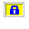

オリジナルとの差分
UTF-8 TeraTerm Pro with TTSSH2とTeraTerm 2.3との機能差分について以下に示します。
機能差分一覧
| 項目 |
TeraTerm 2.3 |
UTF-8 TeraTerm Pro with TTSSH2 |
| ソースコード |
開示 |
開示 |
| 開発環境 |
Visual C++ 5.0 / Watcom C/C++ 11.0 |
Visual Studio 2005[*1] |
| ライセンス |
オリジナル[*2] |
BSDライセンス[*3] |
| アイコン |
 [*4] [*4] |
 [*4] [*4] |
| TTSSHアイコン |
 |
 [*4] [*4] |
- [*1] 一部MFC(C++)を使用しているため、Express Editionではビルドができない。
- [*2] 改造版 Tera Term を不特定多数の人に配布する場合には作者（寺西高氏）の許可が必要。ただし、プラグインは除く。いかなる場合においても金銭的利益を得るためにTeraTermを配布するには作者（寺西高氏）の許可が必要。
- [*3] 修正BSDライセンスに準拠する。
- [*4] アイコンの制作は坂本龍彦氏による。